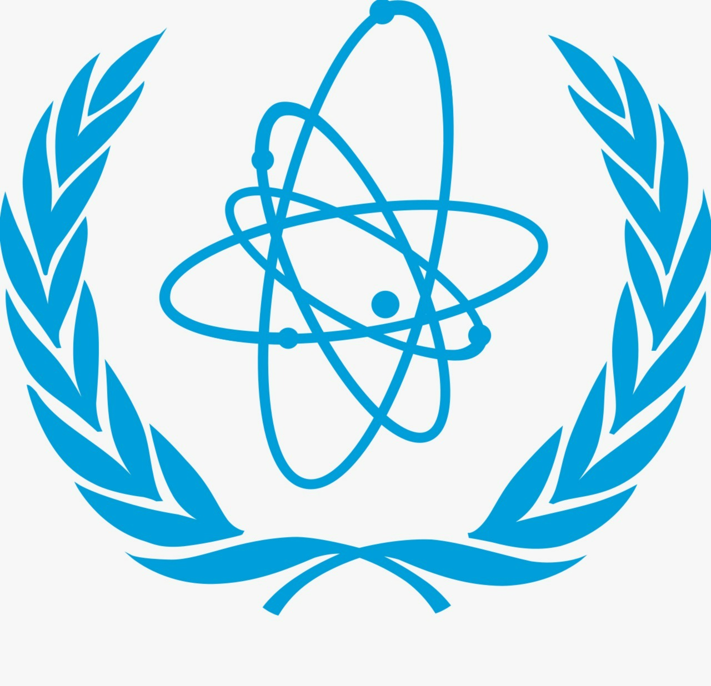

.jpg)
Mohammad Zubaidi
Committee Chair
Mohammad Al Zubaidi began his MUN journey in the 8th grade in AMSI 22’, going on to not win an award and be tormented by current executive board members Adam Fattal and Majed Kawakneh for the entire award ceremony at the time. Although his first MUN experience wasn’t the brightest, it made him fall in love with the debate along with the social side of MUN. Following said experiences, he decided to go to 13 more conferences, making AMSIMUN his 14th and sadly final conference. He couldn’t be more excited to chair this conference and see what it has to offer!
.jpg)
Karim Yacoub
Committee Chair
Karim Yacoub, a 12th grader at Al Mawakeb School Garhoud, began his Model United Nations (MUN) journey in Grade 10 simply to explore something new. However, it quickly became a genuine passion. Through debates, resolutions, and the occasional chaotic caucus, he developed a strong interest in diplomacy and global issues. MUN has played a key role in building his confidence, enhancing his public speaking skills, and improving his ability to think on his feet, while also teaching him how to argue in a professional and structured manner.
Committee Image

Topic Description
IAEA
Revisiting Iraq 2003 and Greenland: When Nuclear “Threat” Claims Are Used to Pressure Sovereignty — Trusting IAEA Inspections or Forcing Control
Download Background Guide